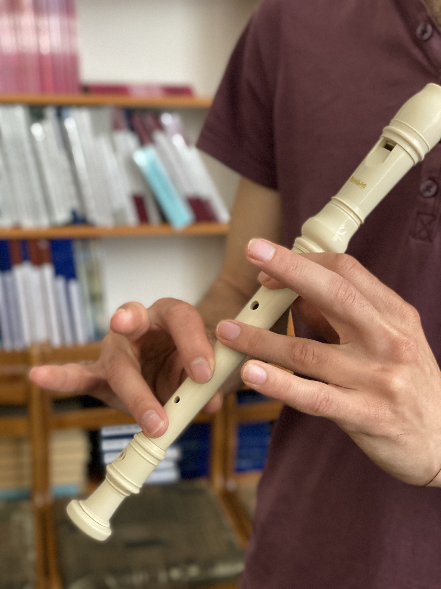
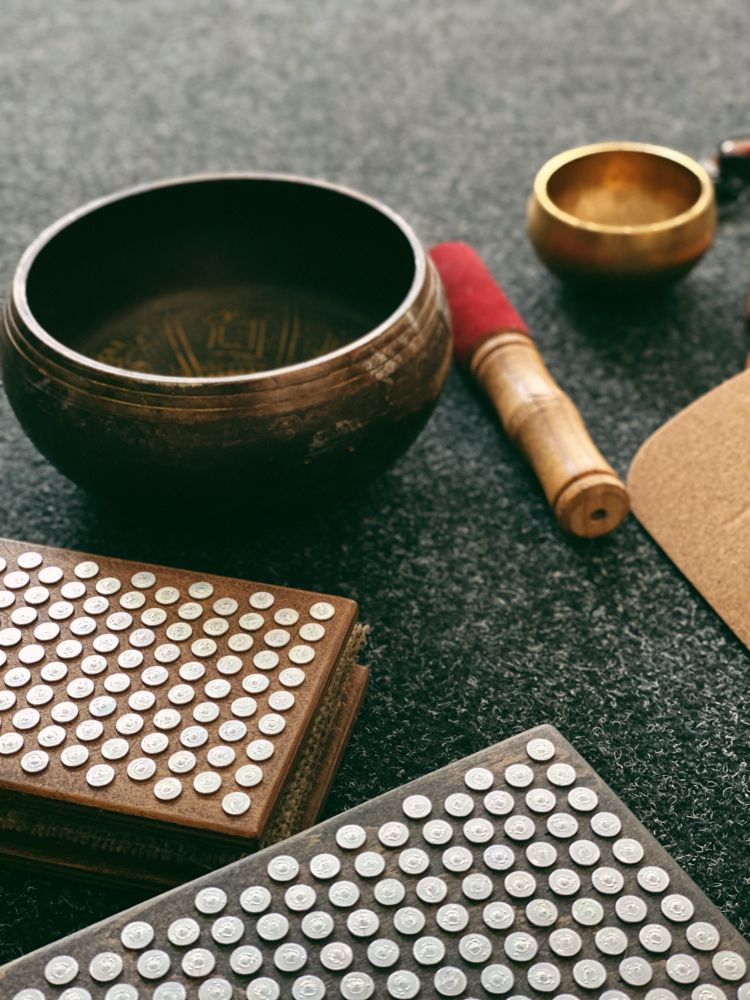
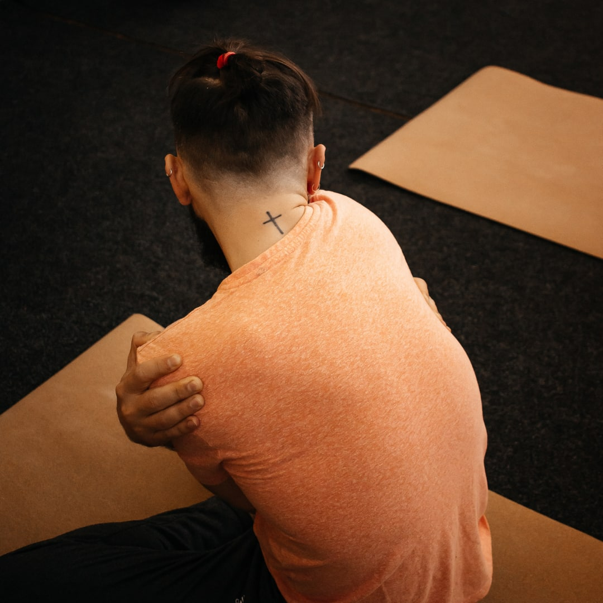

Про що ми:
Інструменти
Розкриємо тобі нашу скарбничку😉 На даний момент в арсеналі інструментів маємо розроблені 2 курси, 4 інтенсиви, 2 марафони та програми жіночих кіл і чоловічих інтенсивів. У просторі "Цінність" ми також працюємо через тіло: йогу, цвяхостояння. Розкриваємо творчий потенціал за допомогою арт-терапії, гри на флейті, співу, вивчення української, різноманітних творчих майстер-класів Ви можете взаємодіяти з нами різними шляхами: відвідувати заняття в просторі за donation, стати учасником наших офлайн і онлайн заходів або прийти на індивідуальні сесії до наших майстрів. У наступних дописах ми познайомимо вас із ними. З любов'ю @tsinn_ist Запис на заняття в нашому ТГК
Ліла

Прожити досвід всього життя за один день. Як гадаєте можливо? Можливо жити життя й не отримати цей досвід. Ось це вже страшніше. А знайти та отримати підказки із середини себе, рухаючись по стрілам долі та занепадаючи в стани повної зневаги до себе та своїх дій, спускаючись по змії егоїзма вже тричи поспіль… що це для тебе? Хочеш відчути? Допоможемо. Просто довірся, відчуй в середині поклик та приходь прожити життя в грі, дати волю своїй душі проявитися в справжній своїй ролі в цьому світі. Глибоко? Авжеж, больно й неприємно? Можливо, але потім завжди легко та розширююче.
Саундхілінг
Почувши звучання тибетських чаш, ви йдете назустріч до джерела вібрації Всесвіту. Ви відчуваєте себе одним цілим з музикою планет.Відпочинок, релакс, розслаблення, єдність, подорож душі, довіра - ці та безліч інших слів не в змозі описати наповнення гармонією звуків і вібрацією, котра заливає по самі вінця кожну клітину тіла, і досягається невагомість. Свідомість, що очищена від метушні думок, які не припиняють свій діалог. Це саунд хілінг! Звуки, що оздоровлюють, гармонізують дії тіла, душі й розум. Звук - це вібрація. Споглядання миті життя і пробудження, хоча б на момент.
Уроки гри на блок-флейті
ЗВУЧАТИ можна будь-коли, у будь-якому віці та за допомогою будь-яких інструментів. Олег Батуринський @forest.bat наш провідник у прояві творчого потенціалу звучання Душі, і флейта - його вірний помічник у цьому. Відчуй поклик серця, вібрацію, створи мову мелодії, розкрий себе через звук, візьми в руки флейту, закрий пальцями отвори на інструменті, зроби вдих і... Зазвучи! Завітай на заняття із гри на флейті для дорослих та дітей. Вони проходять у вівторок та четвер
Цвяхостояння
Дошки Садху - інструмент самопізнання, контролю сили духу, просвітлення та потужної енергетичної зарядки. Через біль ти пізнаєш себе, вчишся приймати її, очищати розум, контролювати силу волі, домагатися мети. Під час сеансу важливе і головне виходить наперед, залишаючи за все непотрібне, ти входиш у чистий стан тут і зараз.
Онлайн школа blag_ist
ОФЛАЙН чи ОНЛАЙН що обиреш ти? Взаємодія з нами офлайн - це участь в інтенсиві з чоловіками або в жіночому колі. Онлайн з нами - це авторські продукти @blag_ist, а саме: курс "21 день Свідомої Йоги", курс-інтенсив "10 днів МЕНЕ", 3-х денний інтенсив "Як полюбити себе?", 2 марафони "Танцюю життя", "Ранок для мене" і закритий клуб "Зона комфорту". Перелік офлайн занять у просторі @tsinn_ist тут
Інвесторам
Пропонуємо декілька форматів взаємодії з тими. кому відгукується мета нашого простору
- Долучення до команди та проявлення себе в ЦІННОСТІ доступним для тебе шляхом
- Корпоративні заходи у форматі mastermind, онлайн програми та групові закриті заняття в просторі для співробітників компанії
- Фінансова підтримка простору